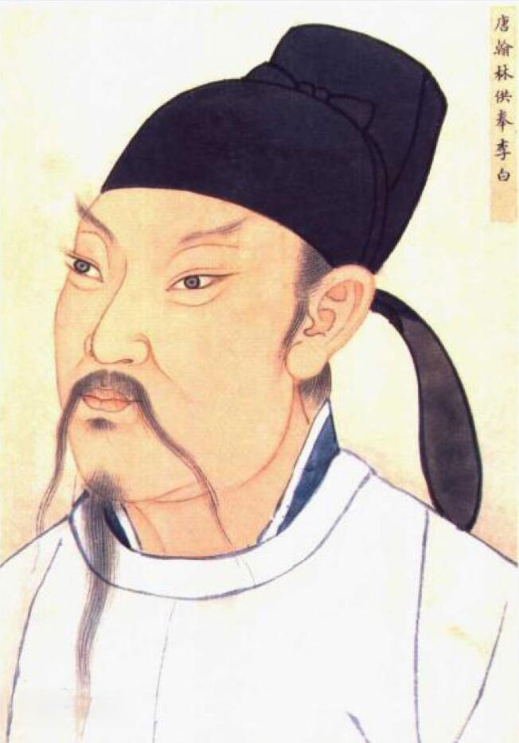
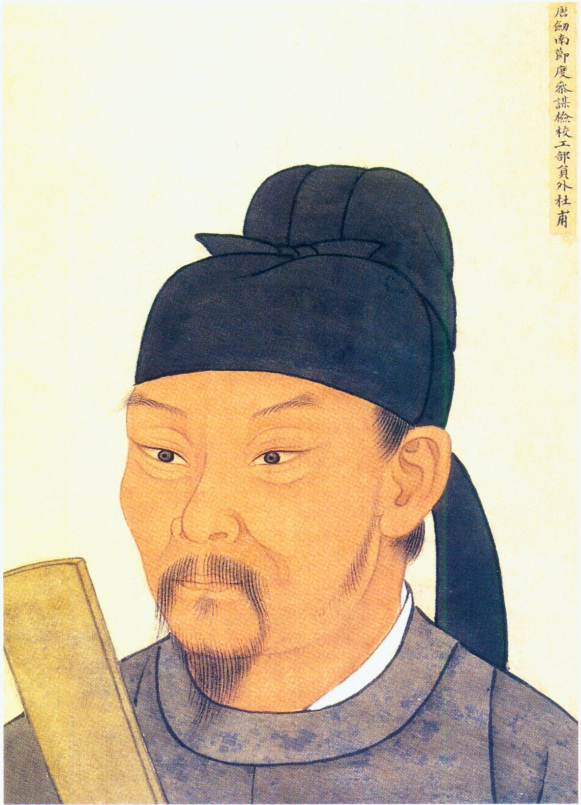

701—762 · 字太白 · 号青莲居士
李白
诗仙 · 浪漫主义
仗剑远游，饮酒赋诗。诗笔纵横恣肆，常以奇想与豪情打开天地；月、酒、山水之间，寄寓着自由不羁的灵魂。
蜀中成长仗剑远游长安供奉江湖终老
李白 · 杜甫 · 诗歌数字志
盛唐的天空里，一颗星自由而明亮，一颗星沉厚而长久。李白与杜甫曾在洛阳相会、同游梁宋，短暂的相知穿过千年，仍映照在彼此的诗行之间。

仗剑远游，饮酒赋诗。诗笔纵横恣肆，常以奇想与豪情打开天地；月、酒、山水之间，寄寓着自由不羁的灵魂。

由盛世走向乱离，亲历漂泊与困顿。以沉郁顿挫之笔记录时代悲欢，将个人命运与家国忧思写进诗史。
从诗句里读风格，也从风格里照见时代。切换诗人，聆听两种截然不同而同样深远的诗心。
在数万行诗句之间，寻找李白与杜甫彼此照面的瞬间。
以诗题或诗句寻访两位诗人的作品，点开诗笺即可展读全篇。